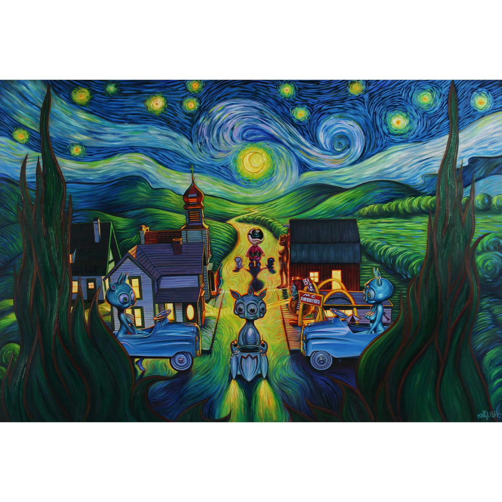

Literature
Ron English, Abject Expressionism: The Art of Ron English (San Francisco: Last Gasp, 2002), p. 49. ISBN 978-0867196894.
Ron English, Original Grin: The Art of Ron English (Paris: Cernunnos, 2019), p. 44. ISBN 978-2374950938.
Notes
In Abject Expressionism and Original Grin, this work was erroneously reported as 36x42 inches.
This work references Vincent Van Gogh’s Starry Night.